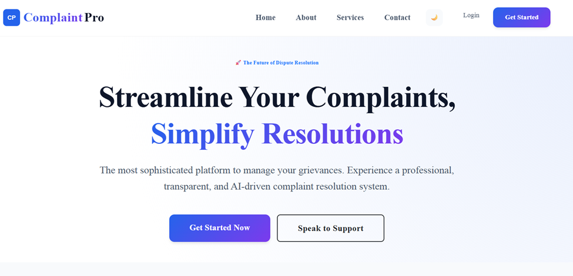

A modern complaint management platform designed for secure grievance submission, live tracking, and transparent resolution workflows.
ComplaintPro is a full-stack complaint resolution platform created to simplify the process of submitting, managing, and tracking complaints in a secure and professional environment.
Users can register accounts, submit complaints with details and attachments, and monitor resolution progress through real-time status updates. The platform focuses on transparency, security, and efficient complaint handling.
The interface was designed with a clean and futuristic layout to provide a smooth complaint management experience. Structured cards, modern typography, and balanced spacing improve readability while maintaining a professional appearance.
The workflow was optimized to reduce complexity during complaint submission and tracking, making the platform intuitive for users across devices.
React, Node.js, Express.js, MongoDB, Vite, Bootstrap, REST APIs, and authentication middleware.
This project improved my understanding of full-stack application architecture, secure authentication systems, protected routes, responsive dashboards, and workflow-based platform design.
One of the biggest learnings was designing a secure and scalable complaint management system while maintaining a clean user experience and efficient state handling.